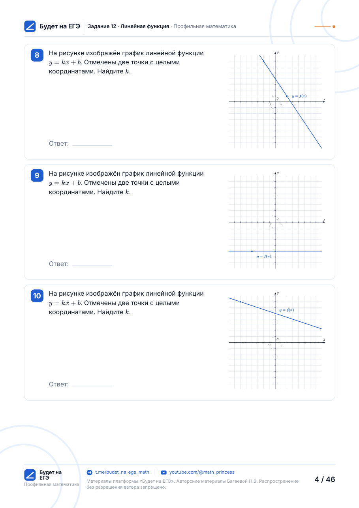
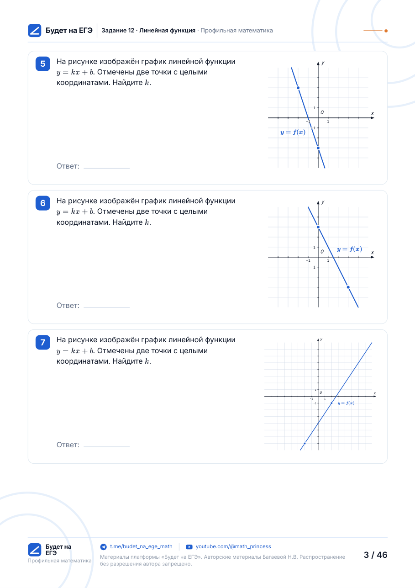
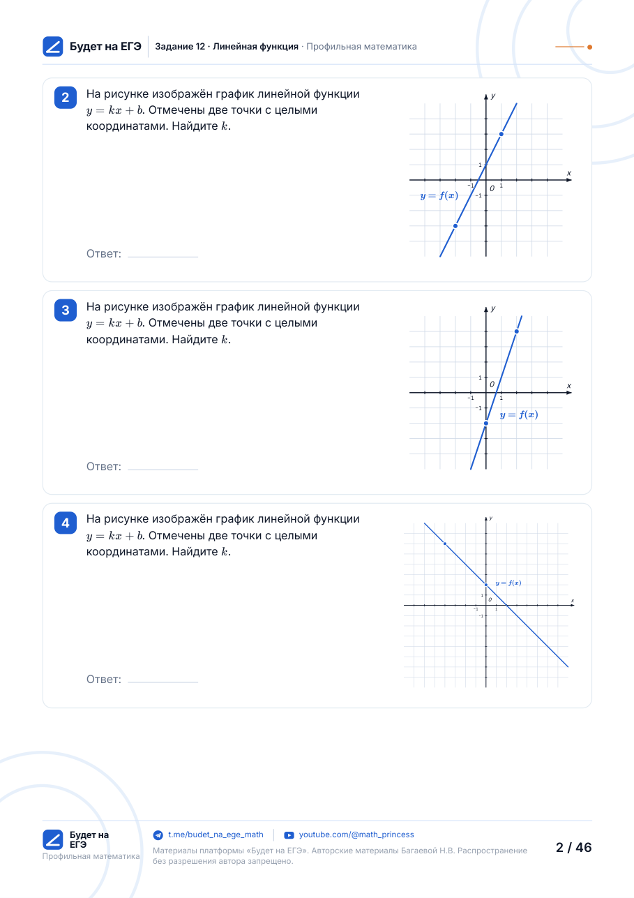
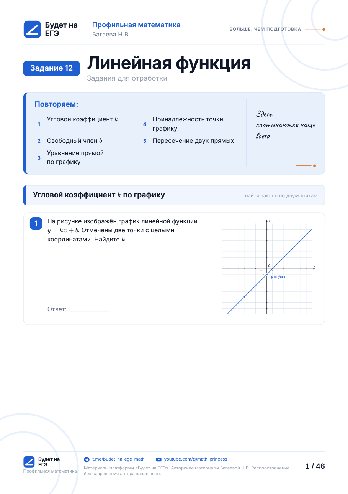

<!-- Первый экран /uchitelyam/. Вставляется вместо содержимого <main>. -->
<section class="svc-hero" aria-labelledby="svc-title">
  <div class="wrap svc-hero__grid">
    <div>
      <p class="hero__eyebrow">Материалы под ключ</p>
      <h1 class="svc-hero__title" id="svc-title">
        <span>Пришлите работу</span><span>как есть — верну</span><span>готовую к печати</span>
      </h1>
      <p class="svc-hero__lead">Рукопись, фотография, файл Word — любой исходник. Обратно приходит набранная и свёрстанная работа: выверенные формулы, точные чертежи, варианты равной сложности, лист ответов и решения. Вам остаётся распечатать.</p>
      <div class="svc-hero__actions">
        <a class="btn btn--primary btn--lg" href="#raschet">Рассчитать заказ</a>
        <a class="btn btn--secondary btn--lg" href="#primery">Посмотреть примеры</a>
      </div>
      <p class="svc-hero__note">От 2&nbsp;000&nbsp;₽ за работу до&nbsp;10&nbsp;задач · отвечаю на заявку в&nbsp;течение 24&nbsp;часов</p>
      <div class="svc-foot">
        <div class="svc-trust">
          
          <div><b>Наталия Багаева, гимназия «Сократ»</b><span>Учитель математики высшей категории, эксперт ЕГЭ и&nbsp;ОГЭ. Каждый ответ проверяется дважды, второй раз — на&nbsp;следующий день.</span></div>
        </div>
        <div class="svc-status"><b>Ближайший старт — 29&nbsp;сентября</b><span>Срочное место на этой неделе свободно</span></div>
      </div>
    </div>
    <figure class="svc-ba" id="primery" style="margin:0" aria-label="Рукописная самостоятельная и она же, набранная в четырёх вариантах">
      <span class="svc-chip svc-chip--before">Было · рукопись</span>
      <div class="svc-before" aria-hidden="true">
  <p class="svc-before__head">С/р «Линейная функция»</p>
  <p class="svc-before__var">Вариант 1</p>
  <p>1) На рис. график f(x) = kx + b. <s>Найти</s> Найдите f(8).</p>
  <svg width="150" height="92" viewBox="0 0 150 92">
    <path d="M4 60 C40 61 90 59 146 58"/>
    <path d="M60 88 C59 60 61 30 60 4"/>
    <path d="M140 54 l6 4 l-6 4 M56 10 l4 -6 l4 6"/>
    <path d="M10 80 C45 66 90 44 138 22"/>
    <path d="M30 70 m-3 0 a3 3 0 1 0 6 0 a3 3 0 1 0 -6 0 M112 34 m-3 0 a3 3 0 1 0 6 0 a3 3 0 1 0 -6 0"/>
  </svg>
  <p>2) Прямая через (−4; 4) и (4; −1). Найдите f(4) <s>f(2)</s></p>
  <p>3) График f(x) = kx + b проходит через (−6; −3) и (2; 1). Найдите f(−6).</p>
  <p>4) k = ? если …</p>
</div>
      <svg class="svc-arrow" width="120" height="70" viewBox="0 0 120 70" aria-hidden="true">
      <path d="M4 60 C30 64 70 50 108 16"/><path d="M92 14 L109 15 L106 32"/>
    </svg>
      <div class="svc-fan__tabs" aria-hidden="true"><span>В1</span><span>В2</span><span>В3</span><span>В4</span></div>
      <div class="svc-fan" aria-hidden="true">
      
    </div>
      <span class="svc-chip svc-chip--after">Стало · 4 варианта и ответы</span>
      <span class="hand-note svc-note">формулы и чертежи<br>проверю сама</span>
    </figure>
  </div>
</section>
